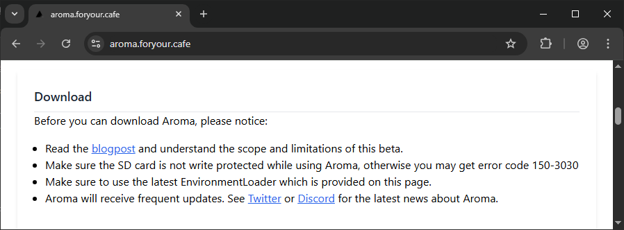
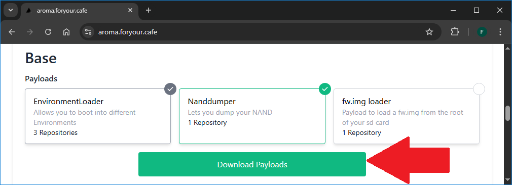
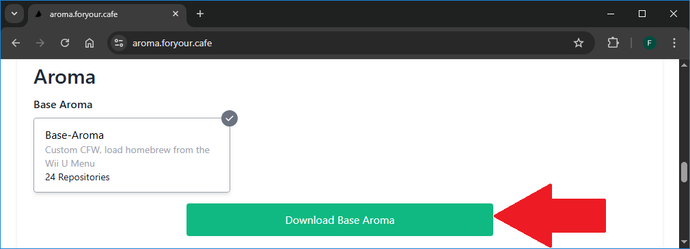
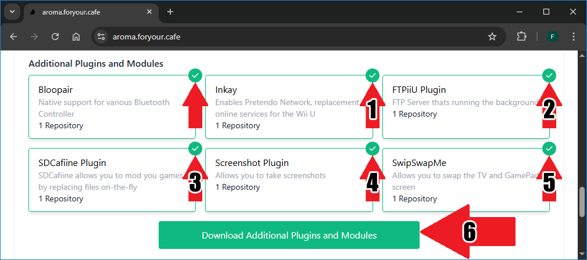
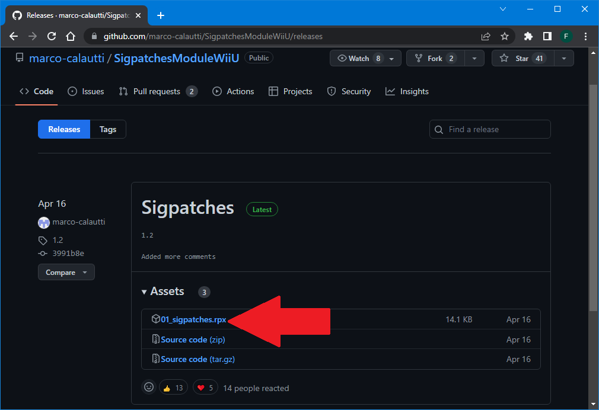
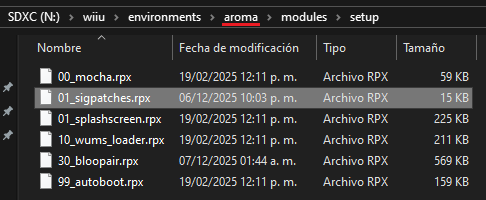

Actualizar Aroma
Solamente necesitas descargar los archivos más recientes y remplazar los anteriores en la tarjeta SD.
- Este enlace lleva al sitio oficial de Aroma: https://aroma.foryour.cafe/.
- Dentro del sitio debes bajar. Al hacerlo estás dando por entendido que:
- Conoces el alcance y las limitaciones de la versión beta de Aroma.
- La tarjeta SD no está protegida contra escritura, de lo contrario, va a salir el código de error 150-3030.
- Estas utilizando la versión más reciente del Environment Loader.
- Aroma recibirá actualizaciones frecuentes por lo cual debes mantenerte informado por vías oficiales para conocer las últimas noticias sobre su desarrollo.
- En la sección Base haz clic en el botón Download Payloads para iniciar la descarga del archivo
aroma-packages-environmentloader+wiiu-nanddumper-payload.zip. - En la sección Aroma haz clic en el botón Download Base Aroma para iniciar la descarga del archivo
aroma-beta-27.zip. - En la sección Additional Plugins and Modules ya está seleccionado Bloopair, seleciona Inkay (1), seleciona FTPiiU Plugin (2), SDCafiine Plugin (3), Screenshot Plugin (4) y SwipSwapMe (5).
- Clic en el botón Download Additional Plugin and Modules (6) para iniciar la descarga del archivo
aroma-packages-bloopair+inkay+ftpiiu+sdcafiine+screenshotplugin+swipswapme.zip. - Ignora la sección Plugins and Modules for developers, esos plugins no son necesarios para un usuario común, sólo son útiles para desarrolladores o testers.




¡Muy importante! Descarga el módulo de Sigpatches.
- Descarga la versión más actual del módulo Sigpatches.
- Únicamente necesitas el archivo
01_sigpatches.rpx.

Instalación
Al terminar de colocar todos los archivos en la tarjeta SD debe quedar una sola carpeta wiiu, no debe de haber otras carpetas wiiu. En general siempre se combina la carpeta wiiu del archivo .zip que acabas de descargar con la carpeta wiiu que ya tienes en la raíz de la tarjeta SD, excepto si es la primera vez que colocas una carpeta wiiu en la raíz de la tarjeta SD.
Si la PC te pregunta si deseas combinar carpetas selecciona sí.
Si la PC te pregunta si deseas reemplazar archivos selecciona sí.
- En este punto debes tener la tarjeta SD conectada a una PC para colocar los archivos.
- Descomprime el archivo
aroma-packages-environmentloader+wiiu-nanddumper-payload.zip. - Copia la carpeta
wiiua la raíz de la tarjeta SD. - Descomprime el archivo
aroma-beta-27.zip. - Copia la carpeta
wiiua la raíz de la tarjeta SD. - Descomprime el archivo
aroma-packages-bloopair+inkay+ftpiiu+sdcafiine+screenshotplugin+swipswapme.zip. - Copia la carpeta
wiiua la raíz de la tarjeta SD.
Importante colocar el módulo de Sigpatches de lo contrario no podrás abrir juegos con tickets falsos en el entorno de Aroma (error 199-9999 o mensaje "no se puede usar este programa").
- Copia el archivo
01_sigpatches.rpxa la carpetasd:/wiiu/environments/aroma/modules/setup.
